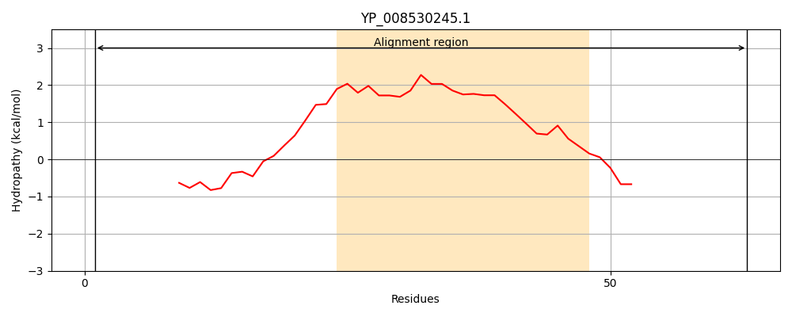
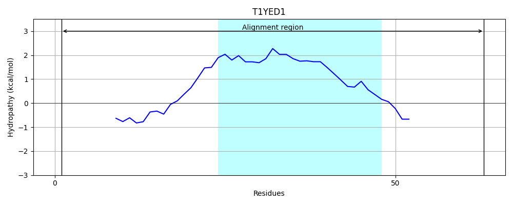
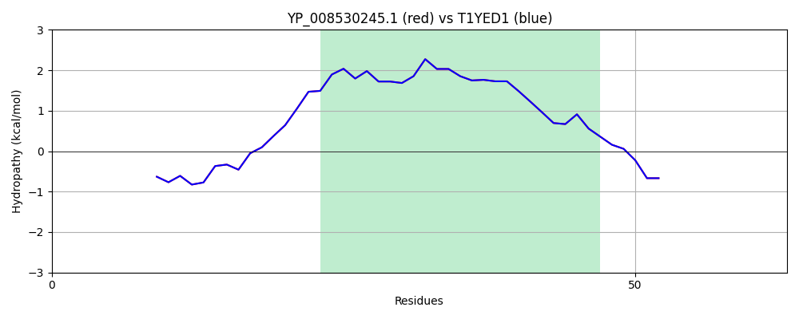

Hit Accession: T1YED1
Hit TCID: 3.A.1.134.11
Hit Description: gnl|BL_ORD_ID|20213 gnl|TC-DB|T1YED1|3.A.1.134.11 Uncharacterized protein OS=Staphylococcus aureus subsp. aureus CN1 GN=SAKOR_02704 PE=4 SV=1
Mach Len: 63
e:0.000000
Query TMS Count : 1
Hit TMS Count: 1
TMS-Overlap Score: 1.250000
Predicted Substrates:CHEBI:29570;daptomycin, CHEBI:2970;bacitracin, CHEBI:135075;alphaprodine
BLAST Alignment:
| Protein Hydropathy Plots: | |
|---|---|
|  |  |
Pairwise Alignment-Hydropathy Plot: | |
|  | |